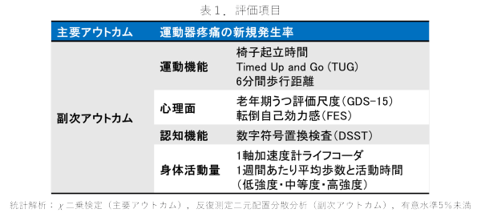
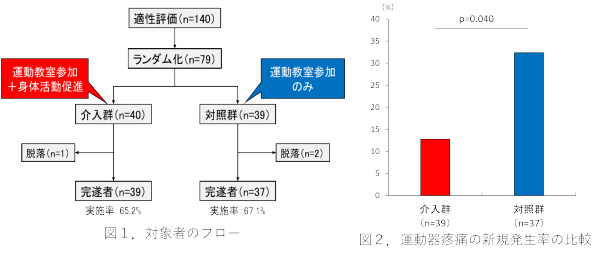
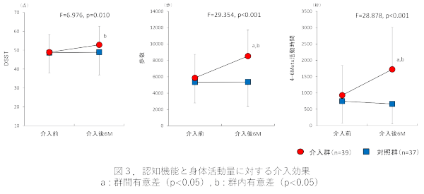
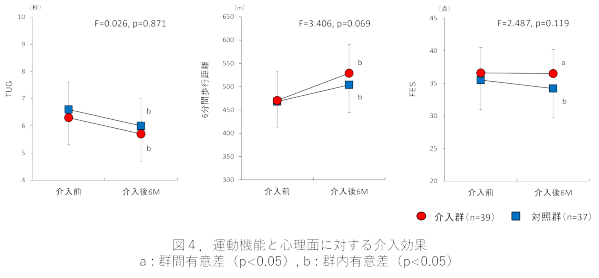

地域在住高齢者に頻発する運動器疼痛は，フレイルや要介護発生のリスクであり，死亡率増加に影響します．身体活動量低下が疼痛新規発生に関連し，促進プログラムが予防効果を持つと仮定し，ランダム化比較対照試験で検証しました．
身体活動促進プログラムは，運動器疼痛の新規発生を予防することが明らかとなりました．また認知機能改善と転倒自己効力感低下予防にも有効です．
＜方法＞
対象は65歳以上で疼痛なし79名．運動教室への参加に加え身体活動量の向上を図る介入群（40名）と，運動教室のみに参加する対照群（39名）の2群に分けました．介入は6ヶ月間，週1回60分の運動プログラム（筋力・バランストレーニング）を実施しました．身体活動促進では歩数計を配布し，日々の歩数を日記に記録し，毎月10％増加を目標としました．

＜結果＞
介入群の新規発生率は5名（12.8％），対照群12名（32.4％）で有意差がありました．数字符号置換検査と身体活動量において2群間で交互作用を認めました．認知機能と身体活動量で改善し，転倒自己効力感も介入群で向上しました．



地域在住高齢者に対する身体活動促進プログラムは運動器疼痛の新規発生を予防し，認知機能や心理面も改善することが明らかとなり，有効な介入戦略として示唆されました．